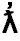

|
|
| Version | 4.1.0 - proposed |
| Authors | Asmus Freytag (asmus@unicode.org), Mark Davis (mark.davis@us.ibm.com)) |
| Date | 2004-09-02 |
| This Version | http://www.unicode.org/reports/tr34/tr34-1.html |
| Previous Version | none |
| Latest Version | http://www.unicode.org/reports/tr34/ |
| Tracking Number | 1 |
Summary
This report defines named sequences of Unicode Characters
Status
This document is a proposed draft of a Unicode Standard Annex. Publication does not imply endorsement by the Unicode Consortium. This is a draft document which may be updated, replaced, or superseded by other documents at any time. This is not a stable document; it is inappropriate to cite this document as other than a work in progress.
A Unicode Standard Annex (UAX) forms an integral part of the Unicode Standard, but is published as a separate document. The Unicode Standard may require conformance to normative content in a Unicode Standard Annex, if so specified in the Conformance chapter of that version of the Unicode Standard. The version number of a UAX document corresponds to the version number of the Unicode Standard at the last point that the UAX document was updated.
Please submit corrigenda and other comments with the online reporting form [Feedback]. Related information that is useful in understanding this document is found in the References. For the latest version of the Unicode Standard see [Unicode]. For a list of current Unicode Technical Reports see [Reports]. For more information about versions of the Unicode Standard, see [Versions].
This annex specifies sequences of characters that may be treated as single units, either in particular types of processing, in reference by standards, in listing of repertoires (such as for fonts or keyboards), or in communicating with users.
Some standards, notably those developed by ISO/IEC JTC1/SC2 have a long standing tradition of using the formal name of a character as the means to identify corresponding characters across standards. With Unicode as the universal character set, this practice has largely given way to using the code point in Unicode as the unique identifier. However, some standards contain entities or characters that are mapped to a sequence of characters rather than to a single Unicode code point. In these instances it is convenient to have a name for the sequence.
Here are examples of such characters, and their representation as a sequence of code points.
| Appearance | Code Points | Name or Linguistic Usage |
|---|---|---|
| 0063 0068 | Slovak, traditional Spanish | |
| 0074 02B0 | Native American languages | |
| 0078 0323 | ||
|  | 019B 0313 | |
| 00E1 0328 | Lithuanian | |
| 0069 0307 0301 | ||
| 30C8 309A | Ainu in kana transcription | |
 |
17BB 17C6 | khmer vowel sign srak om |
| 17B6 17C6 | khmer vowel sign srak am | |
 |
17D2 1780 | khmer consonant sign coeng ka |
[Note to reviewers: Eventually, this table would only show entries that are actually in the data file.]
While all combinations of accents and base characters are can be encoded in Unicode, not all combinations are required for a particular purpose and only some may be supported. Named sequences are useful in these contexts as a shorthand to refer to a specific sequence. However, while many sequences of characters get special treatment that varies by language, such as sequences of characters that are collated as a single unit, not all such sequences necessarily need to be named.
[Note to reviewers: The status of standardized variations needs to be evaluated in the context of the introduction of named sequences. Many variation sequences, but not all, were introduced for mapping purposes and the corresponding entities in other standards are named there.]
The standard notation for a sequence of more than one character is defined by the Unicode Standard (see Section 0.3, Notational Conventions in [Unicode]) as
<HHHH, HHHH, ....HHHH>
where HHHH is a sequence of four to six upper case hexadecimal digits, optionally preceded by "U+". The sequence is enclosed by "<" and ">" and items are separated by commas, optionally followed by spaces. When discussing sequences, [Unicode] occasionally uses an informal format, where the code positions are replaced by short names, or the angle brackets omitted, as long as the meaning is clear in context.
ISO/IEC 10646 defines a formal identifier for any sequence of code positions. In 10646 such an identifier is known as a UCS Sequence Identifier (USI). It has the following form:
<UID1, UID2, ..., UIDn>
where and UID1, UID2, etc. represent the short identifiers of the corresponding code positions. As for Unicoede, a comma (optionally followed by a space) separates the UIDs. The UCS Sequence Identifier must include at least two UIDs; it must be enclosed with a LESS-THAN SIGN and a GREATER-THAN SIGN. The full syntax of the notation of a short identifier, in Backus-Naur form, is:
{ U | u } [ {+}(xxxx | xxxxx | xxxxxx) | {-}xxxxxxxx ]
where “x” represents one hexadecimal digit ('0' to '9', 'A' to 'F', or 'a' to 'f'). For example:
-hhhhhhhh
Uhhhhhhhh
kkkk
+kkkk
U+kkkk
where hhhhhhhh indicates the eight-digit form and kkkk indicates the four-to-six-digit form.
Conformance to the Unicode Standard requires conformance to the specification in this document. The relationship between conformance to the Unicode Standard, and conformance to an individual Unicode Standard Annex (UAX) is described in more detail in the Unicode Standard in Section 3.2, Conformance Requirements.
Unicode-conformant implementations that implement this specification must do so as described in the following clause.
| C1 |
[TBD: edit boilerplate] |
[Note to reviewers: The precise details of this have not yet been drafted, the plan is to approach this in a way analogous to how character names are referred to by the existing conformance clause.]
Names of Unicode sequences are unique. Where possible, they are constructed by appending the names of the constituent elements together while eliding duplicate elements. Were this process would result in a name that already exists, then the name is modified suitably to guarantee uniqueness.
| USI | Alternate representation of sequence | Name |
|---|---|---|
|
<0041, 0043, 0043> |
<A, B, C> | LATIN CAPITAL LETTER A B C |
|
<00CA, 0046> |
<AE, F> | LATIN CAPITAL LETTER AE F |
|
<005X, xxxx> |
<X, COMBINING DIACRITIC ABOVE> | LATIN CAPITAL LETTER X WITH DIACRITIC ABOVE |
Where names are constructed other than by merging existing character names for the constituent characters of the sequence, convention restricts any additional items to only contain the Latin capital letters A to Z, SPACE, HYPHEN-MINUS and the digits 0 to 9, provided that a digit is not the first character in a word.
Like character names, the names for sequences are unique if SPACE and HYPHEN-MINUS characters are ignored, and if the strings “LETTER”, “CHARACTER”, and “DIGIT” are ignored in comparison of the names. There is a single namespace for character and sequences. As a result, where a name exists as a character name, an modified name must be assigned instead. The same applies to not-yet-encoded characters.
Where applicable, the other rules from Appendix L in ISO/IEC 10646 apply.
While each sequence has exactly one normative name, multiple informative aliases may be assigned.
[Note to reviewers: The format of documenting aliases, if any, has not yet been drafted. It is possibe thtat aliases will not be part of the same data file as the formal definition of the sequence names.]
In addition, the names may be translated, with the translated names for each language being unique with respect to each other and the corresponding set of translated character names, but not restricted to the same limited character set as the English names.
A data file is available. See [Data].
| [Charts] | The online code charts can be found
at http://www.unicode.org/charts/ An index to characters names with links to the corresponding chart is found at http://www.unicode.org/charts/charindex.html |
| [Data] | Named composite entities data file For the latest version, see: http://www.unicode.org/Public/UNIDATA/NamedSequences.txt For other versions, see: http://www.unicode.org/standard/versions/ |
| [Feedback] | Reporting Errors and Requesting Information Online http://www.unicode.org/reporting.html |
| [FAQ] | Unicode Frequently Asked Questions
http://www.unicode.org/faq/ For answers to common questions on technical issues. |
| [Glossary] | Unicode Glossary
http://www.unicode.org/glossary/ For explanations of terminology used in this and other documents. |
| [Normal] | Unicode Technical Report #15: Unicode Normalization Forms http://www.unicode.org/unicode/reports/tr15/ |
| [RegEx] | Unicode Technical Standard #18: Regular Expressions
http://www.unicode.org/unicode/reports/tr18/ |
| [Reports] | Unicode Technical Reports
http://www.unicode.org/reports/ For information on the status and development process for technical reports, and for a list of technical reports. |
| [Scripts] | Scripts data file For the latest
version, see:
http://www.unicode.org/Public/UNIDATA/Scripts.txt
For other versions, see: http://www.unicode.org/standard/versions/ |
| [UCD] | Unicode Character Database. http://www.unicode.org/ucd For an overview of the Unicode Character Database and a list of its associated files |
| [Unicode] | The Unicode Standard For the latest version see: http://www.unicode.org/versions/latest/. For the current version see: http://www.unicode.org/versions/Unicode4.1.0/. For the last major version see: The Unicode Consortium. The Unicode Standard, Version 4.0. (Boston, MA, Addison-Wesley, 2003. 0-321-18578-1). |
| [Versions] | Versions of the Unicode Standard
http://www.unicode.org/standard/versions
For information on version numbering, and citing and referencing the Unicode Standard, the Unicode Character Database, and Unicode Technical Reports. |
The following summarizes modifications from the previous version of this document.
| 1 | Initial version [AF] |
Copyright © 2001-2004 Unicode, Inc. All Rights Reserved. The Unicode Consortium makes no expressed or implied warranty of any kind, and assumes no liability for errors or omissions. No liability is assumed for incidental and consequential damages in connection with or arising out of the use of the information or programs contained or accompanying this technical report. The Unicode Terms of Use apply.
Unicode and the Unicode logo are trademarks of Unicode, Inc., and are registered in some jurisdictions.